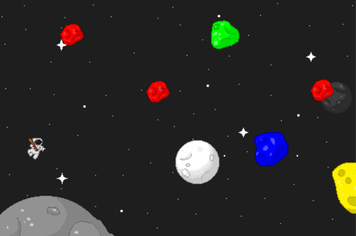
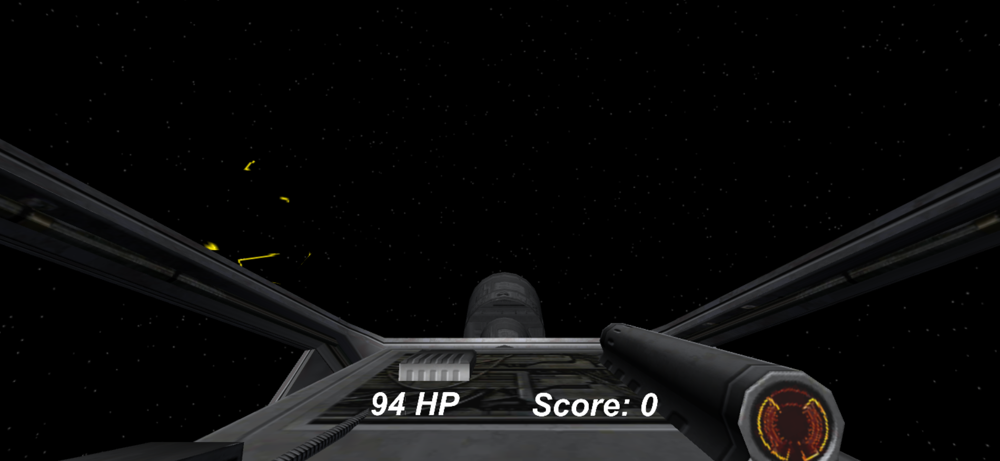
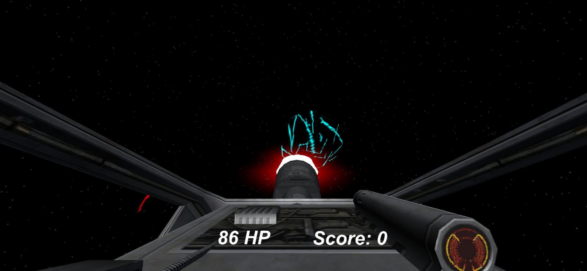
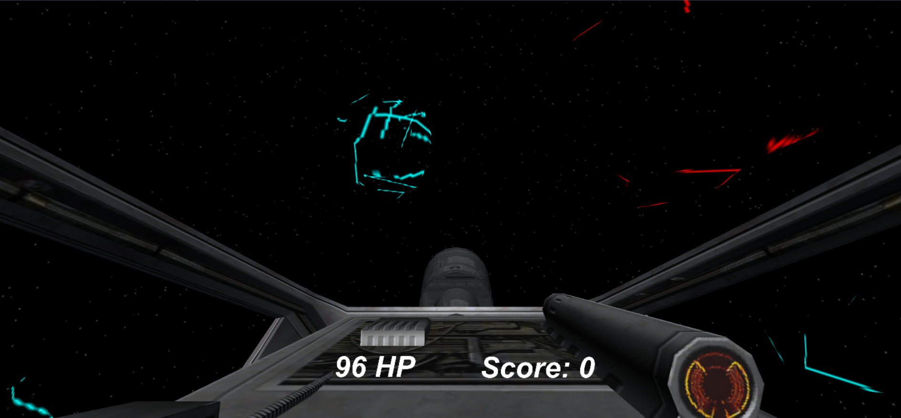
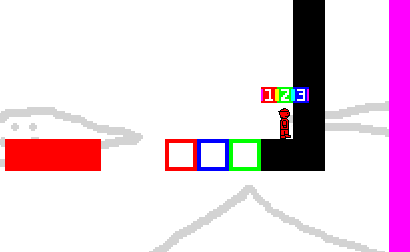

WORKSHOPS. PROFESSIONAL SPEAKERS. NETWORKING. CODE. DESIGN. ART. MUSIC. FOOD. VIDEO GAMES.
Whether you’re a game programming wizard, a level 90 artist, or just a video game enthusiast, this event is a great way to experiment with game concepts, talk to professional game developers and artists, and meet others like you -- craftspeople with a passion for realizing their technical or creative skills in a fun larger context.
Don't worry if your game isn't exactly as you envisioned, or if you don't finish! We encourage you to submit whatever you have, however incomplete it may be. Feel free to work after the deadline and expand on your prototype, too -- what you make is completely yours.
No experience? If you don’t know any art or programming, this is the perfect excuse to learn, whether on your own or from experienced peers! Pick and choose what to attend and build a curriculum that suits you!

Check Out Our Submissions!

Spaceball
Anna Li
You are a space cowboy (really, just an astronaut) with a love for baseball, so what better way to play baseball than with incoming asteroids! But wait, these aren't just any regular asteroids, each color corresponds to what letter you have to press in order to hit the right colored baseball! For example, if you want to hit the red asteroid, you have to hold R and press the space button. For the blue asteroid, you have to hold B and press the space button. Those colors seem easy enough, but with more colored asteroids, you're going to have to start guessing what's the name of each color! Remember to always press the key of the first letter of the color's name and then press space at the same time in order to fire the baseball! Move around with the arrow keys! Good luck! (Also, there's a bug in the game currently. Do not move your player past the boundaries of the screen, or else you'll be stuck there forever!)



COLOROIDS: SPACE MANIA
Luis Tolosa, Ernesto Sandoval, Jett Anderson
(no description)
The Apothecary
Melissa Parker and Sharang Biswas
In The Apothecary, players take on the role of an apothecary/physician in a small, medieval town, and attempt to cure various patients of their illnesses. Of course, the game designers don't assume that an player comes armed with a thorough knowledge of medieval medical practices, so they provide a handy little book, the Medicinale Anglicum as a resource for players to consult whenever they need to. Players will have to make well-informed medical decisions, as well as wrestle with ethical dilemmas as they navigate the social and biological currents of their small town.

Canvas Crusade
Brett Jervey, Steven Shao
Navigate the levels by switching colors!
Schedule
FRIDAY 3/25:
3:00-4:00 “Quick and Dirty” Workshop Series
3:00-3:30 GameMaker Engine
3:30-4:00 Twine Engine
4:00-6:00 Professional Speakers + Q&A Sessions
4:00-5:15 Developing an Art Direction: Tim Doolen, Lead Artist, MUSE Games (Guns of Icarus, CreaVures, Hamsterdam)
5:30-6:00 Starting Off Right -- How to Game Jam: Ramiro Corbetta, Director of Digital Game Design and Development, LIU Matt Parker, NYU Game Center
6:00 Game Jam Kickoff!
8:00 Pizza Dinner
SATURDAY 3/26:
11:30-12:00 Bagels & Jam Breakfast
6:00-7:30 Playtesting
11:59 Turn In
FRIDAY 4/1:
4:00-5:00 Guest Speaker
5:00-6:00 Game Jam Showcase!
F A Q
DO I NEED TO COME WITH A TEAM ALREADY FORMED?
No! Everyone will have some time to think and pitch an idea. Collaborate with new friends or peers you admire. If you have a great idea you want to bring to life on your own, you can do that too.
DO I NEED SPECIAL SKILLS TO PARTICIPATE?
No -- this is just as much an experience to learn as to create! Budding designers, developers, artists and anyone is welcome to try their hand at making a game. Even if you have no experience at all, you can still participate by contributing ideas, playtesting, and giving moral support to your team. Plus, our workshops will give you enough knowledge to help you fiddle with the game engines themselves.
I CAN’T DRAW (OR MAKE MUSIC, OR…) -- CAN WE USE ASSETS?
Yes! And you’re encouraged to explore the wide world of assets floating around on the internet. Just make sure that authors are credited. This applies to sounds and graphics likewise.
WHAT MEDIUM (ENGINE) DO WE HAVE TO USE?
Whatever works best for you! Our list of resources is just the beginning. Digital, or non-digital, RPGMaker, GameMaker, Twine, Unity, UnrealEngine -- the choice is yours, so long as your game adheres to the theme.
DO I HAVE TO STAY THE WHOLE TIME?
Come and go as you, or your team, pleases! You can leave, come back, do some work, and join us for our pizza dinner on Friday night at 8:00.
HOW DO I TURN MY WORK IN?
Send a zip file of all of your work to cugamedev@gmail.com and join us for the Game Jam Showcase, Friday, April 1st in Broadway Hall's Main Lounge to play everybody’s games and hear from a special keynote speaker!
Feel free to ask us any other questions on our Facebook page or send us an email at cugamedev@gmail.com.